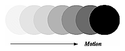
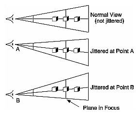

An important goal of almost every graphics program is to draw pictures on the screen. The screen is composed of a rectangular array of pixels, each capable of displaying a tiny square of color at that point in the image. After the rasterization stage (including texturing and fog), the data are not yet pixels, but are fragments. Each fragment has coordinate data which corresponds to a pixel, as well as color and depth values. Then each fragment undergoes a series of tests and operations, some of which have been previously described (See "Blending" in Chapter 6) and others that are discussed in this chapter.
If the tests and operations are survived, the fragment values are ready to become pixels. To draw these pixels, you need to know what color they are, which is the information that's stored in the color buffer. Whenever data is stored uniformly for each pixel, such storage for all the pixels is called a buffer. Different buffers might contain different amounts of data per pixel, but within a given buffer, each pixel is assigned the same amount of data. A buffer that stores a single bit of information about pixels is called a bitplane.
As shown in Figure 10-1, the lower-left pixel in an OpenGL window is pixel (0, 0), corresponding to the window coordinates of the lower-left corner of the 1 ´
1 region occupied by this pixel. In general, pixel (x, y) fills the region bounded by x on the left, x+1 on the right, y on the bottom, and y+1 on the top.
As an example of a buffer, let's look more closely at the color buffer, which holds the color information that's to be displayed on the screen. Assume that the screen is 1280 pixels wide and 1024 pixels high and that it's a full 24-bit color screen - in other words, there are 224 (or 16,777,216) different colors that can be displayed. Since 24 bits translates to 3 bytes (8 bits/byte), the color buffer in this example has to store at least 3 bytes of data for each of the 1,310,720 (1280*1024) pixels on the screen. A particular hardware system might have more or fewer pixels on the physical screen as well as more or less color data per pixel. Any particular color buffer, however, has the same amount of data saved for each pixel on the screen.
The color buffer is only one of several buffers that hold information about a pixel. For example, in "A Hidden-Surface Removal Survival Kit" in Chapter 5, you learned that the depth buffer holds depth information for each pixel. The color buffer itself can consist of several subbuffers. The framebuffer on a system comprises all of these buffers. With the exception of the color buffer(s), you don't view these other buffers directly; instead, you use them to perform such tasks as hidden-surface elimination, antialiasing of an entire scene, stenciling, drawing smooth motion, and other operations.
This chapter describes all the buffers that can exist in an OpenGL implementation and how they're used. It also discusses the series of tests and pixel operations that are performed before any data is written to the viewable color buffer. Finally, it explains how to use the accumulation buffer, which is used to accumulate images that are drawn into the color buffer. This chapter has the following major sections.
The color buffers are the ones to which you usually draw. They contain either color-index or RGB color data and may also contain alpha values. An OpenGL implementation that supports stereoscopic viewing has left and right color buffers for the left and right stereo images. If stereo isn't supported, only the left buffers are used. Similarly, double-buffered systems have front and back buffers, and a single-buffered system has the front buffers only. Every OpenGL implementation must provide a front-left color buffer.
Optional, nondisplayable auxiliary color buffers may also be supported. OpenGL doesn't specify any particular uses for these buffers, so you can define and use them however you please. For example, you might use them for saving an image that you use repeatedly. Then rather than redrawing the image, you can just copy it from an auxiliary buffer into the usual color buffers. (See the description of glCopyPixels() in "Reading, Writing, and Copying Pixel Data" in Chapter 8 for more information about how to do this.)
One use for the stencil buffer is to restrict drawing to certain portions of the screen, just as a cardboard stencil can be used with a can of spray paint to make fairly precise painted images. For example, if you want to draw an image as it would appear through an odd-shaped windshield, you can store an image of the windshield's shape in the stencil buffer, and then draw the entire scene. The stencil buffer prevents anything that wouldn't be visible through the windshield from being drawn. Thus, if your application is a driving simulation, you can draw all the instruments and other items inside the automobile once, and as the car moves, only the outside scene need be updated.
The accumulation buffer holds RGBA color data just like the color buffers do in RGBA mode. (The results of using the accumulation buffer in color-index mode are undefined.) It's typically used for accumulating a series of images into a final, composite image. With this method, you can perform operations like scene antialiasing by supersampling an image and then averaging the samples to produce the values that are finally painted into the pixels of the color buffers. You don't draw directly into the accumulation buffer; accumulation operations are always performed in rectangular blocks, which are usually transfers of data to or from a color buffer.
Note: You can enable drawing to nonexistent buffers as long as you enable drawing to at least one buffer that does exist. If none of the specified buffers exist, an error results.
Note: You must enable reading from a buffer that does exist or an error results.
One application for the alpha test is to implement a transparency algorithm. Render your entire scene twice, the first time accepting only fragments with alpha values of one, and the second time accepting fragments with alpha values that aren't equal to one. Turn the depth buffer on during both passes, but disable depth buffer writing during the second pass.
Another use might be to make decals with texture maps where you can see through certain parts of the decals. Set the alphas in the decals to 0.0 where you want to see through, set them to 1.0 otherwise, set the reference value to 0.5 (or anything between 0.0 and 1.0), and set the comparison function to GL_GREATER. The decal has see-through parts, and the values in the depth buffer aren't affected. This technique, called billboarding, is described in "Sample Uses of Blending" in Chapter 6.
You can obtain the values for all six stencil-related parameters by using the query function glGetIntegerv() and one of the values shown in Table 10-3. You can also determine whether the stencil test is enabled by passing GL_STENCIL_TEST to glIsEnabled().
Probably the most typical use of the stencil test is to mask out an irregularly shaped region of the screen to prevent drawing from occurring within it (as in the windshield example in "Buffers and Their Uses"). To do this, fill the stencil mask with zeros, and then draw the desired shape in the stencil buffer with 1's. You can't draw geometry directly into the stencil buffer, but you can achieve the same result by drawing into the color buffer and choosing a suitable value for the zpass function (such as GL_REPLACE). (You can use glDrawPixels() to draw pixel data directly into the stencil buffer.) Whenever drawing occurs, a value is also written into the stencil buffer (in this case, the reference value). To prevent the stencil-buffer drawing from affecting the contents of the color buffer, set the color mask to zero (or GL_FALSE). You might also want to disable writing into the depth buffer.
After you've defined the stencil area, set the reference value to one, and the comparison function such that the fragment passes if the reference value is equal to the stencil-plane value. During drawing, don't modify the contents of the stencil planes.
Example 10-1 demonstrates how to use the stencil test in this way. Two tori are drawn, with a diamond-shaped cutout in the center of the scene. Within the diamond-shaped stencil mask, a sphere is drawn. In this example, drawing into the stencil buffer takes place only when the window is redrawn, so the color buffer is cleared after the stencil mask has been created.
The Accumulation Buffer
Advanced
The accumulation buffer can be used for such things as scene antialiasing, motion blur, simulating photographic depth of field, and calculating the soft shadows that result from multiple light sources. Other techniques are possible, especially in combination with some of the other buffers. (See The Accumulation Buffer: Hardware Support for High-Quality Rendering by Paul Haeberli and Kurt Akeley (SIGGRAPH 1990 Proceedings, p. 309318) for more information on the uses for the accumulation buffer.)
OpenGL graphics operations don't write directly into the accumulation buffer. Typically, a series of images is generated in one of the standard color buffers, and these are accumulated, one at a time, into the accumulation buffer. When the accumulation is finished, the result is copied back into a color buffer for viewing. To reduce rounding errors, the accumulation buffer may have higher precision (more bits per color) than the standard color buffers. Rendering a scene several times obviously takes longer than rendering it once, but the result is higher quality. You can decide what trade-off between quality and rendering time is appropriate for your application.
You can use the accumulation buffer the same way a photographer can use film for multiple exposures. A photographer typically creates a multiple exposure by taking several pictures of the same scene without advancing the film. If anything in the scene moves, that object appears blurred. Not surprisingly, a computer can do more with an image than a photographer can do with a camera. For example, a computer has exquisite control over the viewpoint, but a photographer can't shake a camera a predictable and controlled amount. (See "Clearing Buffers" for information about how to clear the accumulation buffer; use glAccum() to control it.)
- void glAccum(GLenum
op, GLfloat value);
Controls the accumulation buffer. The op parameter selects the operation, and value is a number to be used in that operation. The possible operations are GL_ACCUM, GL_LOAD, GL_RETURN, GL_ADD, and GL_MULT.
GL_ACCUM reads each pixel from the buffer currently selected for reading with glReadBuffer(), multiplies the R, G, B, and alpha values by value, and adds the result to the accumulation buffer.
GL_LOAD does the same thing, except that the values replace those in the accumulation buffer rather than being added to them.
GL_RETURN takes values from the accumulation buffer, multiplies them by value, and places the result in the color buffer(s) enabled for writing.
GL_ADD and GL_MULT simply add or multiply the value of each pixel in the accumulation buffer by value and then return it to the accumulation buffer. For GL_MULT, value is clamped to be in the range [-1.0,1.0]. For GL_ADD, no clamping occurs.
Scene Antialiasing
To perform scene antialiasing, first clear the accumulation buffer and enable the front buffer for reading and writing. Then loop several times (say, n) through code that jitters and draws the image (jittering is moving the image to a slightly different position), accumulating the data with
glAccum(GL_ACCUM, 1.0/n);
and finally calling
glAccum(GL_RETURN, 1.0);
Note that this method is a bit faster if, on the first pass through the loop, GL_LOAD is used and clearing the accumulation buffer is omitted. See Table 10-5 for possible jittering values. With this code, the image is drawn n times before the final image is drawn. If you want to avoid showing the user the intermediate images, draw into a color buffer that's not displayed, accumulate from that, and use the GL_RETURN call to draw into a displayed buffer (or into a back buffer that you subsequently swap to the front).
You could instead present a user interface that shows the viewed image improving as each additional piece is accumulated and that allows the user to halt the process when the image is good enough. To accomplish this, in the loop that draws successive images, call glAccum() with GL_RETURN after each accumulation, using 16.0/1.0, 16.0/2.0, 16.0/3.0, ... as the second argument. With this technique, after one pass, 1/16 of the final image is shown, after two passes, 2/16 is shown, and so on. After the GL_RETURN, the code should check to see if the user wants to interrupt the process. This interface is slightly slower, since the resultant image must be copied in after each pass.
To decide what n should be, you need to trade off speed (the more times you draw the scene, the longer it takes to obtain the final image) and quality (the more times you draw the scene, the smoother it gets, until you make maximum use of the accumulation buffer's resolution). "Plate 22" and "Plate 23" show improvements made using scene antialiasing.
Example 10-2 defines two routines for jittering that you might find useful: accPerspective() and accFrustum(). The routine accPerspective() is used in place of gluPerspective(), and the first four parameters of both routines are the same. To jitter the viewing frustum for scene antialiasing, pass the x and y jitter values (of less than one pixel) to the fifth and sixth parameters of accPerspective(). Also pass 0.0 for the seventh and eighth parameters to accPerspective() and a nonzero value for the ninth parameter (to prevent division by zero inside accPerspective()). These last three parameters are used for depth-of-field effects, which are described later in this chapter.
Example 10-2 : Routines for Jittering the Viewing Volume: accpersp.c
#define PI_ 3.14159265358979323846
void accFrustum(GLdouble left, GLdouble right, GLdouble bottom,
GLdouble top, GLdouble near, GLdouble far, GLdouble pixdx,
GLdouble pixdy, GLdouble eyedx, GLdouble eyedy,
GLdouble focus)
{
GLdouble xwsize, ywsize;
GLdouble dx, dy;
GLint viewport[4];
glGetIntegerv (GL_VIEWPORT, viewport);
xwsize = right - left;
ywsize = top - bottom;
dx = -(pixdx*xwsize/(GLdouble) viewport[2] +
eyedx*near/focus);
dy = -(pixdy*ywsize/(GLdouble) viewport[3] +
eyedy*near/focus);
glMatrixMode(GL_PROJECTION);
glLoadIdentity();
glFrustum (left + dx, right + dx, bottom + dy, top + dy,
near, far);
glMatrixMode(GL_MODELVIEW);
glLoadIdentity();
glTranslatef (-eyedx, -eyedy, 0.0);
}
void accPerspective(GLdouble fovy, GLdouble aspect,
GLdouble near, GLdouble far, GLdouble pixdx, GLdouble pixdy,
GLdouble eyedx, GLdouble eyedy, GLdouble focus)
{
GLdouble fov2,left,right,bottom,top;
fov2 = ((fovy*PI_) / 180.0) / 2.0;
top = near / (fcos(fov2) / fsin(fov2));
bottom = -top;
right = top * aspect;
left = -right;
accFrustum (left, right, bottom, top, near, far,
pixdx, pixdy, eyedx, eyedy, focus);
}
Example 10-3 uses these two routines to perform scene antialiasing.
Example 10-3 : Scene Antialiasing: accpersp.c
#include <GL/gl.h>
#include <GL/glu.h>
#include <stdlib.h>
#include <math.h>
#include <GL/glut.h>
#include "jitter.h"
void init(void)
{
GLfloat mat_ambient[] = { 1.0, 1.0, 1.0, 1.0 };
GLfloat mat_specular[] = { 1.0, 1.0, 1.0, 1.0 };
GLfloat light_position[] = { 0.0, 0.0, 10.0, 1.0 };
GLfloat lm_ambient[] = { 0.2, 0.2, 0.2, 1.0 };
glMaterialfv(GL_FRONT, GL_AMBIENT, mat_ambient);
glMaterialfv(GL_FRONT, GL_SPECULAR, mat_specular);
glMaterialf(GL_FRONT, GL_SHININESS, 50.0);
glLightfv(GL_LIGHT0, GL_POSITION, light_position);
glLightModelfv(GL_LIGHT_MODEL_AMBIENT, lm_ambient);
glEnable(GL_LIGHTING);
glEnable(GL_LIGHT0);
glEnable(GL_DEPTH_TEST);
glShadeModel (GL_FLAT);
glClearColor(0.0, 0.0, 0.0, 0.0);
glClearAccum(0.0, 0.0, 0.0, 0.0);
}
void displayObjects(void)
{
GLfloat torus_diffuse[] = { 0.7, 0.7, 0.0, 1.0 };
GLfloat cube_diffuse[] = { 0.0, 0.7, 0.7, 1.0 };
GLfloat sphere_diffuse[] = { 0.7, 0.0, 0.7, 1.0 };
GLfloat octa_diffuse[] = { 0.7, 0.4, 0.4, 1.0 };
glPushMatrix ();
glTranslatef (0.0, 0.0, -5.0);
glRotatef (30.0, 1.0, 0.0, 0.0);
glPushMatrix ();
glTranslatef (-0.80, 0.35, 0.0);
glRotatef (100.0, 1.0, 0.0, 0.0);
glMaterialfv(GL_FRONT, GL_DIFFUSE, torus_diffuse);
glutSolidTorus (0.275, 0.85, 16, 16);
glPopMatrix ();
glPushMatrix ();
glTranslatef (-0.75, -0.50, 0.0);
glRotatef (45.0, 0.0, 0.0, 1.0);
glRotatef (45.0, 1.0, 0.0, 0.0);
glMaterialfv(GL_FRONT, GL_DIFFUSE, cube_diffuse);
glutSolidCube (1.5);
glPopMatrix ();
glPushMatrix ();
glTranslatef (0.75, 0.60, 0.0);
glRotatef (30.0, 1.0, 0.0, 0.0);
glMaterialfv(GL_FRONT, GL_DIFFUSE, sphere_diffuse);
glutSolidSphere (1.0, 16, 16);
glPopMatrix ();
glPushMatrix ();
glTranslatef (0.70, -0.90, 0.25);
glMaterialfv(GL_FRONT, GL_DIFFUSE, octa_diffuse);
glutSolidOctahedron ();
glPopMatrix ();
glPopMatrix ();
}
#define ACSIZE 8
void display(void)
{
GLint viewport[4];
int jitter;
glGetIntegerv (GL_VIEWPORT, viewport);
glClear(GL_ACCUM_BUFFER_BIT);
for (jitter = 0; jitter < ACSIZE; jitter++) {
glClear(GL_COLOR_BUFFER_BIT | GL_DEPTH_BUFFER_BIT);
accPerspective (50.0,
(GLdouble) viewport[2]/(GLdouble) viewport[3],
1.0, 15.0, j8[jitter].x, j8[jitter].y, 0.0, 0.0, 1.0);
displayObjects ();
glAccum(GL_ACCUM, 1.0/ACSIZE);
}
glAccum (GL_RETURN, 1.0);
glFlush();
}
void reshape(int w, int h)
{
glViewport(0, 0, (GLsizei) w, (GLsizei) h);
}
/* Main Loop
* Be certain you request an accumulation buffer.
*/
int main(int argc, char** argv)
{
glutInit(&argc, argv);
glutInitDisplayMode (GLUT_SINGLE | GLUT_RGB
| GLUT_ACCUM | GLUT_DEPTH);
glutInitWindowSize (250, 250);
glutInitWindowPosition (100, 100);
glutCreateWindow (argv[0]);
init();
glutReshapeFunc(reshape);
glutDisplayFunc(display);
glutMainLoop();
return 0;
}
You don't have to use a perspective projection to perform scene antialiasing. You can antialias a scene with orthographic projection simply by using glTranslate*() to jitter the scene. Keep in mind that glTranslate*() operates in world coordinates, but you want the apparent motion of the scene to be less than one pixel, measured in screen coordinates. Thus, you must reverse the world-coordinate mapping by calculating the jittering translation values, using its width or height in world coordinates divided by its viewport size. Then multiply that world-coordinate value by the amount of jitter to determine how much the scene should be moved in world coordinates to get a predictable jitter of less than one pixel. Example 10-4 shows how the display() and reshape() routines might look with a world-coordinate width and height of 4.5.
Example 10-4 : Jittering with an Orthographic Projection: accanti.c
#define ACSIZE 8
void display(void)
{
GLint viewport[4];
int jitter;
glGetIntegerv (GL_VIEWPORT, viewport);
glClear(GL_ACCUM_BUFFER_BIT);
for (jitter = 0; jitter < ACSIZE; jitter++) {
glClear(GL_COLOR_BUFFER_BIT | GL_DEPTH_BUFFER_BIT);
glPushMatrix ();
/* Note that 4.5 is the distance in world space between
* left and right and bottom and top.
* This formula converts fractional pixel movement to
* world coordinates.
*/
glTranslatef (j8[jitter].x*4.5/viewport[2],
j8[jitter].y*4.5/viewport[3], 0.0);
displayObjects ();
glPopMatrix ();
glAccum(GL_ACCUM, 1.0/ACSIZE);
}
glAccum (GL_RETURN, 1.0);
glFlush();
}
void reshape(int w, int h)
{
glViewport(0, 0, (GLsizei) w, (GLsizei) h);
glMatrixMode(GL_PROJECTION);
glLoadIdentity();
if (w <= h)
glOrtho (-2.25, 2.25, -2.25*h/w, 2.25*h/w, -10.0, 10.0);
else
glOrtho (-2.25*w/h, 2.25*w/h, -2.25, 2.25, -10.0, 10.0);
glMatrixMode(GL_MODELVIEW);
glLoadIdentity();
}
Motion Blur
Similar methods can be used to simulate motion blur, as shown in "Plate 7" in Appendix I and Figure 10-2. Suppose your scene has some stationary and some moving objects in it, and you want to make a motion-blurred image extending over a small interval of time. Set up the accumulation buffer in the same way, but instead of spatially jittering the images, jitter them temporally. The entire scene can be made successively dimmer by calling
glAccum (GL_MULT, decayFactor);
as the scene is drawn into the accumulation buffer, where decayFactor is a number from 0.0 to 1.0. Smaller numbers for decayFactor cause the object to appear to be moving faster. You can transfer the completed scene with the object's current position and "vapor trail" of previous positions from the accumulation buffer to the standard color buffer with
glAccum (GL_RETURN, 1.0);
The image looks correct even if the items move at different speeds, or if some of them are accelerated. As before, the more jitter points (temporal, in this case) you use, the better the final image, at least up to the point where you begin to lose resolution due to finite precision in the accumulation buffer. You can combine motion blur with antialiasing by jittering in both the spatial and temporal domains, but you pay for higher quality with longer rendering times.

Figure 10-2 : Motion-Blurred Object
Depth of Field
A photograph made with a camera is in perfect focus only for items lying on a single plane a certain distance from the film. The farther an item is from this plane, the more out of focus it is. The depth of field for a camera is a region about the plane of perfect focus where items are out of focus by a small enough amount.
Under normal conditions, everything you draw with OpenGL is in focus (unless your monitor's bad, in which case everything is out of focus). The accumulation buffer can be used to approximate what you would see in a photograph where items are more and more blurred as their distance from a plane of perfect focus increases. It isn't an exact simulation of the effects produced in a camera, but the result looks similar to what a camera would produce.
To achieve this result, draw the scene repeatedly using calls with different argument values to glFrustum(). Choose the arguments so that the position of the viewpoint varies slightly around its true position and so that each frustum shares a common rectangle that lies in the plane of perfect focus, as shown in Figure 10-3. The results of all the renderings should be averaged in the usual way using the accumulation buffer.

Figure 10-3 : Jittered Viewing Volume for Depth-of-Field Effects
"Plate 10" in Appendix I shows an image of five teapots drawn using the depth-of-field effect. The gold teapot (second from the left) is in focus, and the other teapots get progressively blurrier, depending upon their distance from the focal plane (gold teapot). The code to draw this image is shown in Example 10-5 (which assumes accPerspective() and accFrustum() are defined as described in Example 10-2). The scene is drawn eight times, each with a slightly jittered viewing volume, by calling accPerspective(). As you recall, with scene antialiasing, the fifth and sixth parameters jitter the viewing volumes in the x and y directions. For the depth-of-field effect, however, you want to jitter the volume while holding it stationary at the focal plane. The focal plane is the depth value defined by the ninth (last) parameter to accPerspective(), which is z = 5.0 in this example. The amount of blur is determined by multiplying the x and y jitter values (seventh and eighth parameters of accPerspective()) by a constant. Determining the constant is not a science; experiment with values until the depth of field is as pronounced as you want. (Note that in Example 10-5, the fifth and sixth parameters to accPerspective() are set to 0.0, so scene antialiasing is turned off.)
Example 10-5 : Depth-of-Field Effect: dof.c
#include <GL/gl.h>
#include <GL/glu.h>
#include <GL/glut.h>
#include <stdlib.h>
#include <math.h>
#include "jitter.h"
void init(void)
{
GLfloat ambient[] = { 0.0, 0.0, 0.0, 1.0 };
GLfloat diffuse[] = { 1.0, 1.0, 1.0, 1.0 };
GLfloat specular[] = { 1.0, 1.0, 1.0, 1.0 };
GLfloat position[] = { 0.0, 3.0, 3.0, 0.0 };
GLfloat lmodel_ambient[] = { 0.2, 0.2, 0.2, 1.0 };
GLfloat local_view[] = { 0.0 };
glLightfv(GL_LIGHT0, GL_AMBIENT, ambient);
glLightfv(GL_LIGHT0, GL_DIFFUSE, diffuse);
glLightfv(GL_LIGHT0, GL_POSITION, position);
glLightModelfv(GL_LIGHT_MODEL_AMBIENT, lmodel_ambient);
glLightModelfv(GL_LIGHT_MODEL_LOCAL_VIEWER, local_view);
glFrontFace (GL_CW);
glEnable(GL_LIGHTING);
glEnable(GL_LIGHT0);
glEnable(GL_AUTO_NORMAL);
glEnable(GL_NORMALIZE);
glEnable(GL_DEPTH_TEST);
glClearColor(0.0, 0.0, 0.0, 0.0);
glClearAccum(0.0, 0.0, 0.0, 0.0);
/* make teapot display list */
teapotList = glGenLists(1);
glNewList (teapotList, GL_COMPILE);
glutSolidTeapot (0.5);
glEndList ();
}
void renderTeapot (GLfloat x, GLfloat y, GLfloat z,
GLfloat ambr, GLfloat ambg, GLfloat ambb,
GLfloat difr, GLfloat difg, GLfloat difb,
GLfloat specr, GLfloat specg, GLfloat specb, GLfloat shine)
{
GLfloat mat[4];
glPushMatrix();
glTranslatef (x, y, z);
mat[0] = ambr; mat[1] = ambg; mat[2] = ambb; mat[3] = 1.0;
glMaterialfv (GL_FRONT, GL_AMBIENT, mat);
mat[0] = difr; mat[1] = difg; mat[2] = difb;
glMaterialfv (GL_FRONT, GL_DIFFUSE, mat);
mat[0] = specr; mat[1] = specg; mat[2] = specb;
glMaterialfv (GL_FRONT, GL_SPECULAR, mat);
glMaterialf (GL_FRONT, GL_SHININESS, shine*128.0);
glCallList(teapotList);
glPopMatrix();
}
void display(void)
{
int jitter;
GLint viewport[4];
glGetIntegerv (GL_VIEWPORT, viewport);
glClear(GL_ACCUM_BUFFER_BIT);
for (jitter = 0; jitter < 8; jitter++) {
glClear(GL_COLOR_BUFFER_BIT | GL_DEPTH_BUFFER_BIT);
accPerspective (45.0,
(GLdouble) viewport[2]/(GLdouble) viewport[3],
1.0, 15.0, 0.0, 0.0,
0.33*j8[jitter].x, 0.33*j8[jitter].y, 5.0);
/* ruby, gold, silver, emerald, and cyan teapots */
renderTeapot (-1.1, -0.5, -4.5, 0.1745, 0.01175,
0.01175, 0.61424, 0.04136, 0.04136,
0.727811, 0.626959, 0.626959, 0.6);
renderTeapot (-0.5, -0.5, -5.0, 0.24725, 0.1995,
0.0745, 0.75164, 0.60648, 0.22648,
0.628281, 0.555802, 0.366065, 0.4);
renderTeapot (0.2, -0.5, -5.5, 0.19225, 0.19225,
0.19225, 0.50754, 0.50754, 0.50754,
0.508273, 0.508273, 0.508273, 0.4);
renderTeapot (1.0, -0.5, -6.0, 0.0215, 0.1745, 0.0215,
0.07568, 0.61424, 0.07568, 0.633,
0.727811, 0.633, 0.6);
renderTeapot (1.8, -0.5, -6.5, 0.0, 0.1, 0.06, 0.0,
0.50980392, 0.50980392, 0.50196078,
0.50196078, 0.50196078, .25);
glAccum (GL_ACCUM, 0.125);
}
glAccum (GL_RETURN, 1.0);
glFlush();
}
void reshape(int w, int h)
{
glViewport(0, 0, (GLsizei) w, (GLsizei) h);
}
/* Main Loop
* Be certain you request an accumulation buffer.
*/
int main(int argc, char** argv)
{
glutInit(&argc, argv);
glutInitDisplayMode (GLUT_SINGLE | GLUT_RGB
| GLUT_ACCUM | GLUT_DEPTH);
glutInitWindowSize (400, 400);
glutInitWindowPosition (100, 100);
glutCreateWindow (argv[0]);
init();
glutReshapeFunc(reshape);
glutDisplayFunc(display);
glutMainLoop();
return 0;
}
Soft Shadows
To accumulate soft shadows due to multiple light sources, render the shadows with one light turned on at a time, and accumulate them together. This can be combined with spatial jittering to antialias the scene at the same time. (See "Shadows" in Chapter 14 for more information about drawing shadows.)
Jittering
If you need to take nine or sixteen samples to antialias an image, you might think that the best choice of points is an equally spaced grid across the pixel. Surprisingly, this is not necessarily true. In fact, sometimes it's a good idea to take points that lie in adjacent pixels. You might want a uniform distribution or a normalized distribution, clustering toward the center of the pixel. (The aforementioned SIGGRAPH paper discusses these issues.) In addition, Table 10-5 shows a few sets of reasonable jittering values to be used for some selected sample counts. Most of the examples in the table are uniformly distributed in the pixel, and all lie within the pixel.
Table 10-5 : (continued) Sample Jittering Values